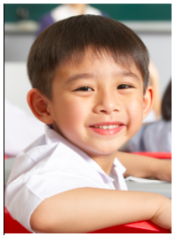
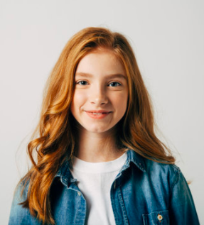

We have students from over 69 different nationalities spanning nearly every continent, with the varied background of the school, they can become more culturally aware and open-minded. Building a welcoming community for any new student. As a mid-sized school of around 700 students, students know each other and are able learn about new cultures while we can provide a variety of education.
Background


Our students represent the IB learner profiles, taught in the school.
- Inquirers
- Knowledgeable
- Thinkers
- Communicators
- Principled
- Open-minded
- Caring
- Risk-takers
- Balanced
- Reflective
For our new students, we pair multiple students to guide and explain the new school as equals. Students can opt as school ambassadors to fulfill this role. They share classes, discuss interests, and help to build a comfortable environment. By doing so, the Pitta School has been able to consistently integrate and develop a sense of belonging within our school community.
In our classroom environment, when students have a high respect for others and their opinions. They understand that there is value in multiculturalism and support opportunities to learn and for each other.

Meet The Students

Ajax
How long have you been at Pitta?
I have been here for 3 years.
What are your two most favorite subjects?
My favorite subjects are math and PE because math is easy, and PE is very fun.
What are your hobbies?
I like to play football with my friends in the school court. We play on the field and it’s fun. I also like videogames sometimes I play with my friends.

Kate
How long have you been at Pitta?
I have been at Pitta School for 2 years.
What are your two most favorite subjects?
I enjoy the art class in school and attend the extracurricular art lessons the school provides. I like art because we can be creative and express ourselves.
I also like humanities (Individuals and Societies) because we get to discuss interesting topics and learn about global history. Debating is very fun because we can show what we think and see other perspectives.
What are your hobbies?
My hobbies include doing art pieces and hanging out with my friends. When I am doing art, I enjoy doing sketches, painting, and digital design. My friends and I like to go to the mall or chill at a café, we usually just talk but sometimes we go to someone’s house to do dance.
Karthik
How long have you been at Pitta?
I have attended Pitta for the past 5 years.
What are your two most favorite subjects?
Personally, I find biology interesting because I appreciate learning the about living things and how they relate for the in-depth understanding of the natural world. Similarly, my other favorite subject is chemistry because it helps to explain many of the concepts that occur in biological processes.
What are your hobbies?
I enjoy going out for hikes and walks with friends or family, relaxing in nature is something that many people miss out on.